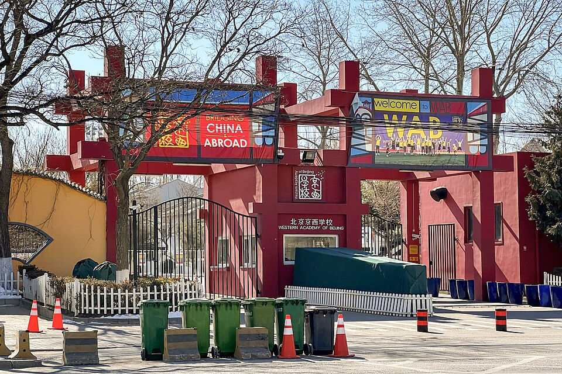

웨스턴 아카데미 오브 베이징 정문(2022) · 사진: N509FZ / Wikimedia Commons, CC BY-SA 4.0
웨스턴 아카데미 오브 베이징(Western Academy of Beijing, WAB) — 베이징 IB 전 과정, PYP에서 MYP로 넘어갈 때 준비법
1. 웨스턴 아카데미 오브 베이징은 어떤 학교인가
WAB는 1994년 개교로 알려진 베이징의 비영리 국제학교입니다.
· 캠퍼스 — 베이징 동북부 차오양구 라이광잉에 넓은 캠퍼스가 있는 것으로 알려져 있습니다. 대사관·외국계 기업이 모인 생활권과 가까운 편입니다.
· 교육과정 — 유치부부터 G12까지 IB로 이어집니다. G5까지 PYP, G6~G10 MYP, G11~G12 DP(디플로마) 구조로 알려져 있습니다.
· 언어 — 수업과 평가는 영어.
IB 학교에서는 학년마다 “무엇을 잘해야 점수가 나오는지”가 달라집니다. 한눈에 보면 이렇습니다.
| 구분 | PYP (~G5) | MYP (G6~G10) | DP (G11~G12) |
|---|---|---|---|
| 수업 방식 | 담임 중심 주제 통합 탐구 | 과목별 교사, 8개 교과군 | 6과목(HL·SL) + TOK·EE |
| 평가 | 관찰·포트폴리오 중심 | 과목별 기준표(criteria) 채점 | IA(내부평가) + 최종 시험 |
| 한국 학생 포인트 | 영어 읽기량·발표 | 영어 글쓰기·수학 풀이 서술 | 과목 설계·IA·에세이 |
※ 학년 구분·개설 과목·모집 일정은 바뀔 수 있으니 학교 요강을 직접 확인하세요.
2. 한국(주재원) 학생이 겪는 어려움
· G6에서 갑자기 과목이 쪼개진다. PYP에서는 한 선생님과 주제 중심으로 배우다가, MYP에 들어서면 과목마다 선생님·과제·마감이 따로 움직입니다. 과제 관리 자체가 새로운 공부가 됩니다.
· 기준표로 채점된다. MYP는 과목별 평가 기준(criteria)에 따라 점수를 줍니다. 한국식으로 “정답만 맞히면 된다”고 생각하면, 기준표에 있는 설명·분석·반성 항목에서 점수가 빠집니다.
· 수학을 영어로 설명해야 한다. 계산은 한국 학생이 빠르지만, 왜 그렇게 풀었는지를 영어 문장으로 쓰는 문제에서 막힙니다.
· 제2언어 교과군. MYP에는 언어 습득(Language acquisition) 교과군이 있어 영어 외 언어 수업도 챙겨야 합니다. WAB에서 고를 수 있는 언어는 요강으로 확인하세요.
3. 그래서 이렇게 준비합니다
🧭 입학·전학 전 — 기준표 읽는 법부터
MYP 과제를 받으면 기준표(rubric)부터 같이 읽고, 최고 단계에 적힌 동사(explain·analyse·evaluate)가 무엇을 요구하는지 표시하는 습관을 들입니다. 이것만으로도 과제 방향이 확 달라집니다. (→ NIST(방콕) — MYP에서 무너지지 않으려면)
📖 영어과외 — 단락 구조와 아카데믹 어휘
MYP 영어(Language and Literature 등)는 주장 → 근거 → 설명이 드러나는 단락 쓰기가 기본입니다. 지시어(describe·compare·justify)별로 답의 모양이 어떻게 달라지는지 연습하고, 발표 과제는 개요 카드로 준비합니다. (→ 국제학교 영어 공부법 · 주재원 자녀 영어과외)
📐 수학과외 — 영어 용어와 풀이 서술
알지브라·비율·기하 용어를 영어로 먼저 정리하고, 풀이를 “What I did / Why”로 한두 문장씩 쓰는 연습을 합니다. MYP 수학은 탐구형 과제에서 패턴을 찾고 일반화하는 과정을 서술하는 비중이 크기 때문입니다. (→ 알지브라 공부법)
4. 베이징의 강점 — 시차 1시간 화상과외
베이징은 한국보다 1시간 늦어, 방과 후 저녁 시간에 실시간 화상 1:1을 잡기 쉽습니다. MYP는 과목별 마감이 흩어져 있어 주 1~2회, 이번 주 과제와 기준표를 화면에 띄워 함께 점검하는 방식이 효과적입니다. 중국 다른 도시의 과외 이야기는 상하이 국제학교 과외와 상하이 학원 vs 화상과외에 정리했습니다.
정리
웨스턴 아카데미 오브 베이징(WAB)은 1994년 개교로 알려진 베이징 차오양구 라이광잉의 IB 전 과정 학교입니다. ① G5→G6 MYP 전환에 대비해 기준표 읽는 법 ② 영어는 단락 구조·지시어 ③ 수학은 영어 용어와 풀이 서술 — 이 셋을 시차 1시간 화상과외로 과제 마감에 맞춰 관리하는 것이 핵심입니다. 30분 무료 상담으로 우리 아이 단계부터 점검해 보세요.